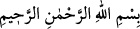
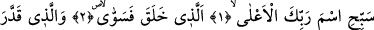
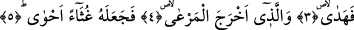

YÜCE RABBININ
ADINI TESBİH ET
1. Rabbinin adını tesbih et.
2. Ki O yaratıp, düzene koymuştur,
3. Ve takdir edip, yol göstermiştir.
4. (Topraktan) yeşil otu çıkarmıştır.
5. Sonra da onu kapkara bir sel artığına çevirmiştir.
Tesbih; tenzih etmek, uzak tutmak demektir. Allah’ın ismine gelince Allah Teâlâ’nın
zâtına bakarak veya Kuddüs gibi selbî sıfatlarından herhangi birini göz önüne alarak ya
da el-Aliym gibi subûtî sıfatlarından birisine itibar ederek ya da el-Hâlık gibi
fiillerinden herhangi bir fiilini dikkate alarak ona isim vermek sahih değildir. Bazı
âlimlere göre Allah Teâlâ’nın isimleri tamamen O’nun bize bildirmesi neticesinde
sâbittir.
Okuduğumuz âyette yer alan; “el-A’lâ” kelimesi kendisinden önce geçen “Rabb”
kelimesinin sıfatıdır. Buna göre mânâ: “Yüce Rab” şeklinde olur. Bu kelimenin “isim”
kelimesinin sıfatı olması da mümkündür. Buna göre mânâ: “Rabbının yüce isimlerini
tesbih et” demek olur. Ancak bu iki şıktan birincisi daha ağır basmaktadır.
Allah Teâlâ’nın yüce olması demek; tanımlayanların tanımından, âriflerin ilminden
yüce olması, onların tanımlarına ve bilgilerine sığmayacak derecede üstün olması
demektir. Allah’ın en yüce olması demek; yücelikte mutlak olarak üstünlük ve ziyadelik
sâhibi olması demektir.
Bazı âlimlerin ifâdesine göre Allah Teâlâ’nın yüceliği cihet, yön açısından bir yücelik
değildir. Aynı şekilde büyüklüğü cüsse itibariyle değildir. Allah Teâlâ mekan ve cüsse
açısından nitelenmekten uzaktır. Tam tersine O’nun yüceliği bütün celal ve kibriya
sıfatlarını hak etmiş olma açısından yüceliktir. Her kim Allah’ın yücelik ve kibriyasını
bilirse alçak gönüllü olup onun sâlih olan kullarının önünde tevazu sâhibi olur.
Şimdi yukarda okuduğumuz âyetin mânâsına gelelim: Sen Rabbinin adını onun
hakkında bir takım sapık yorumlar yapmak sûretiyle küfür ve inkârdan uzak tut. Söz
gelimi O’nun yüceliğini kemal açısından bir yücelik olarak değil de mekanda yücelik
kabul ederek sapık bir yoruma kayma. Ayrıca Allah’ın “istiva”sını “istila” mânâsında